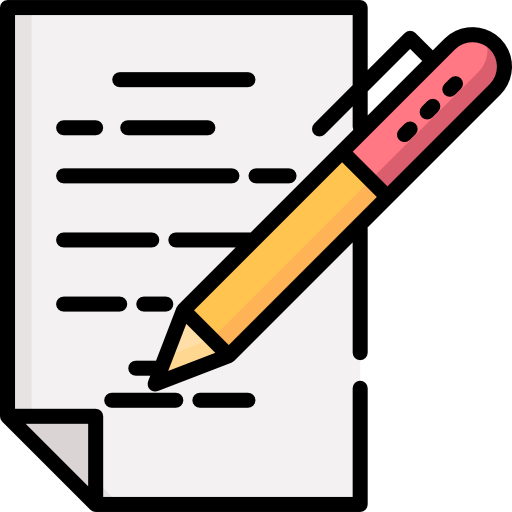

Sobre mí

¿Quién soy?
Soy Eliana Chávez, antes de ser programadora soy cristiana, Dios es lo más importante en mi vida. Soy una mujer un poco hiperactiva, me gusta hacer muchas muchas cosas, a veces lidio con como organizar mi tiempo para alcanzar a realizar todas las cosas que disfruto y quiero hacer. Me encanta aprender cosas nuevas y estoy agradecida por tantas personas que ofrecen su conocimiento a través de internent.
¿Qué me gusta?
Además de programar me gusta hacer muchas otras cosas:
 Correr
Correr- Bordar
 Hacer cursos online
Hacer cursos online- Leer y Escribir
- Idiomas
 Música
Música